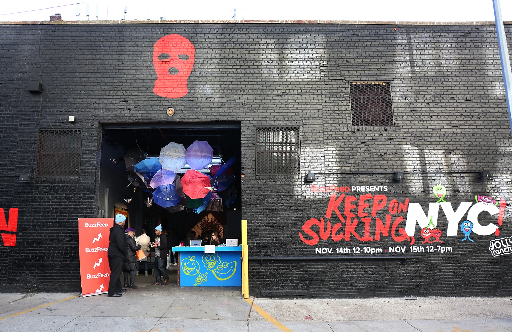
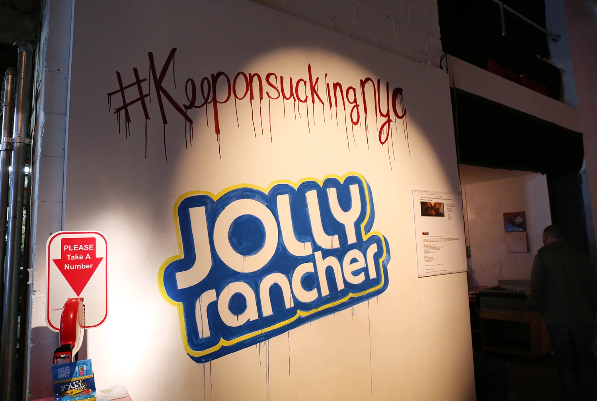
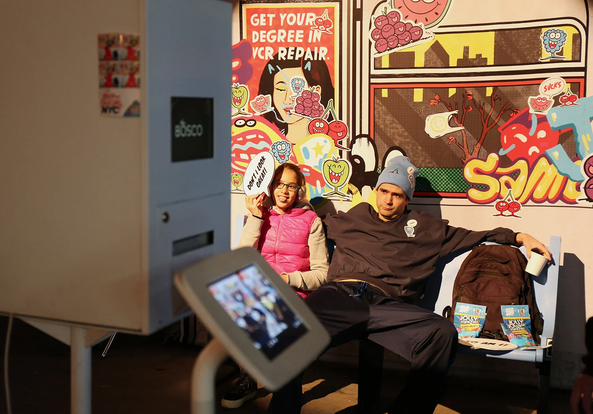
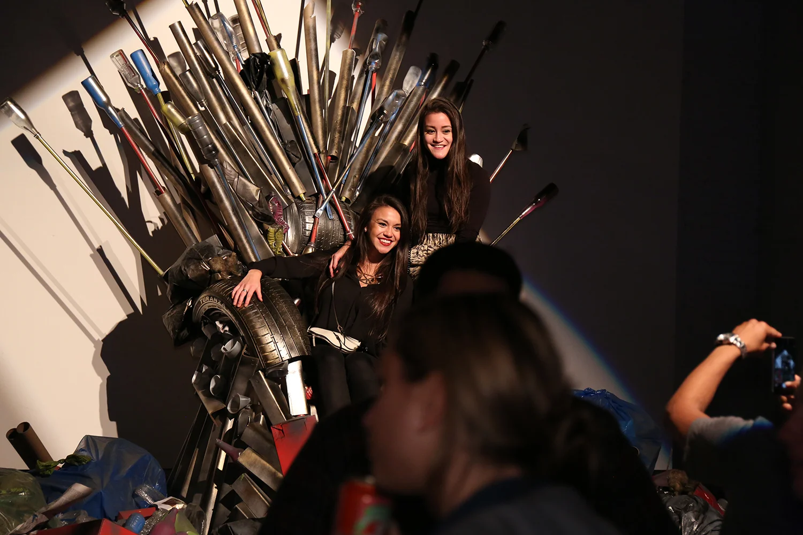
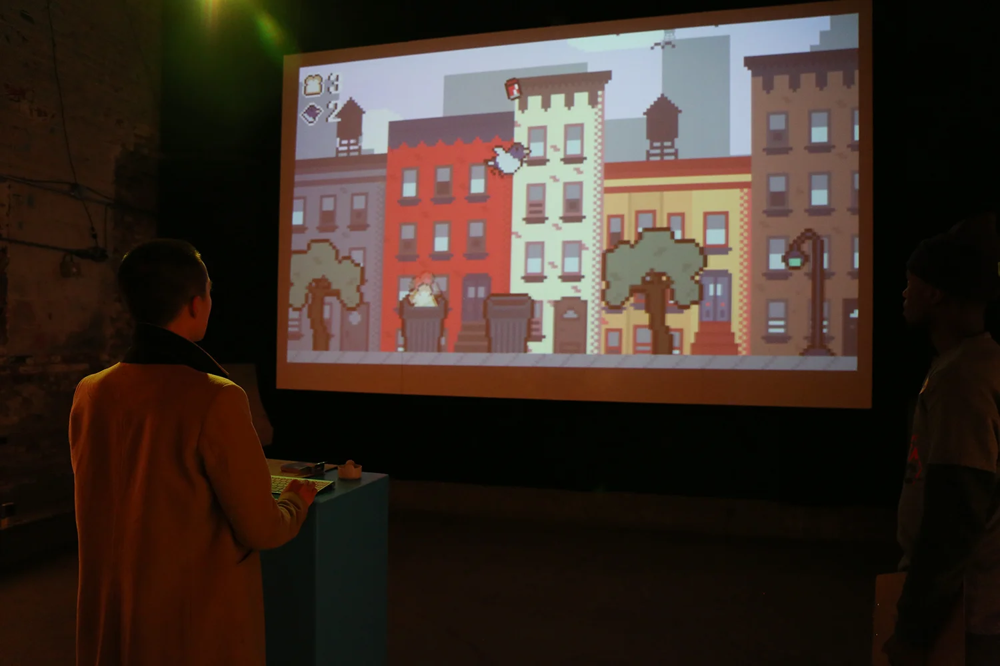
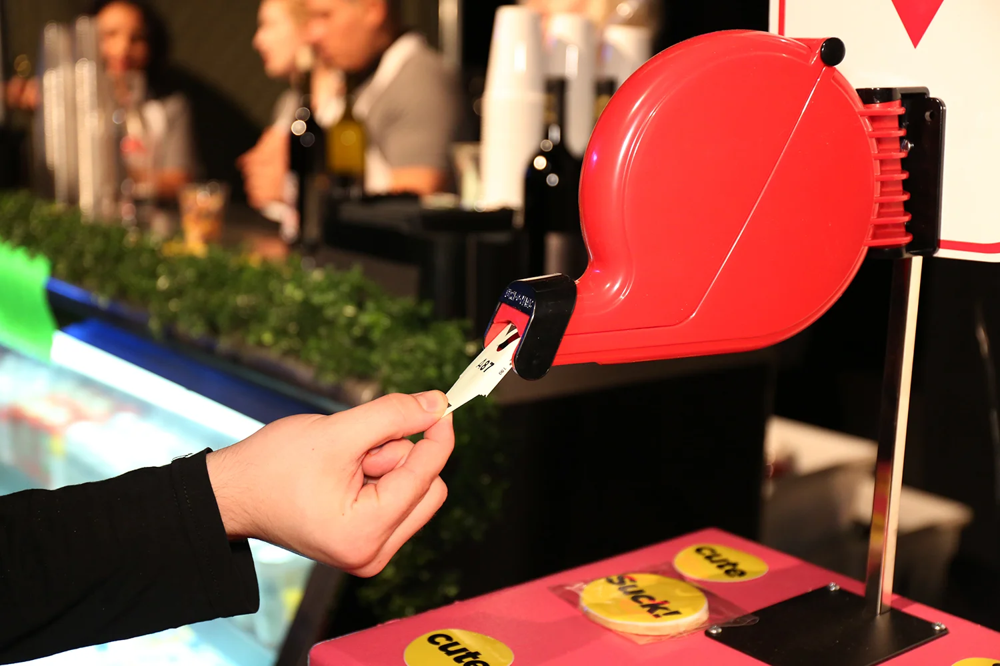
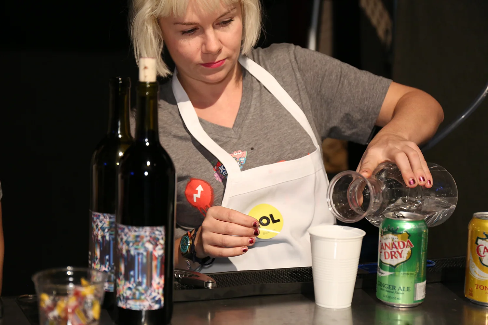

Role: Creative Director, Programmer, Designer
Tasked with bringing Jolly Rancher's #KeepOnSucking campaign to life, my team collaborated with BuzzFeed's in-house events crew to create our very first sponsored experiential pop-up gallery: Keep On Sucking, NYC.
Part avant-garde art installation, part outer-borough warehouse party, Keep On Sucking, NYC was a weekend-long, tongue-in-cheek celebration of all the little things that kind of suck about the Big Apple. Installations included a towering trash throne, the world's smallest New York apartment, and an endless fountain of dripping ACs — including one above a stealthily vodka-serving deli counter.
I also designed and programmed an original video game for the event: The Fattest Bird in Brooklyn.







Photography by Sarah Stone.
Credits